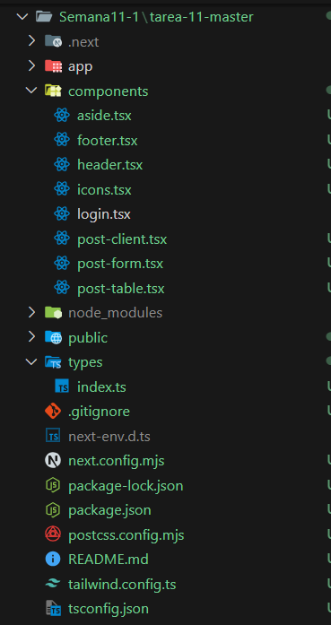
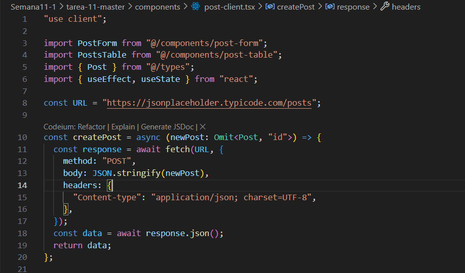
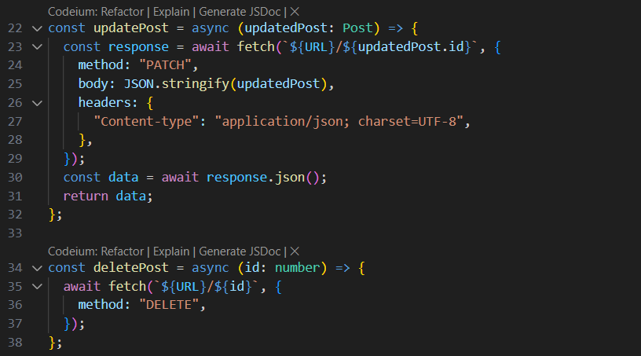
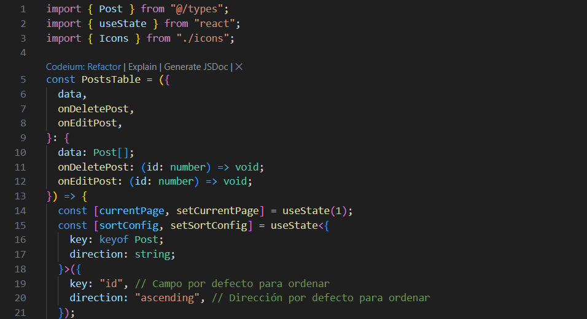
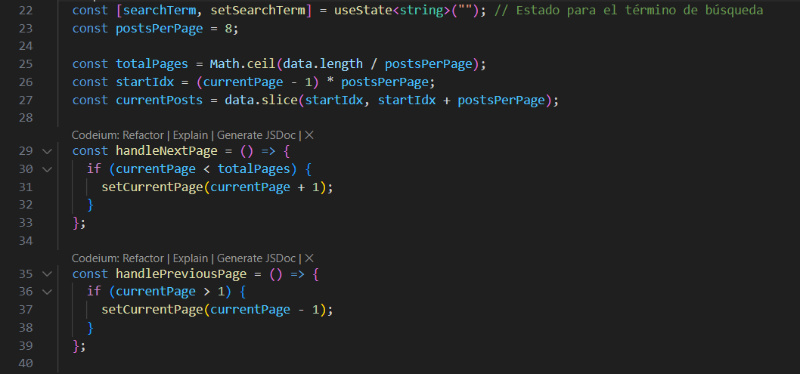
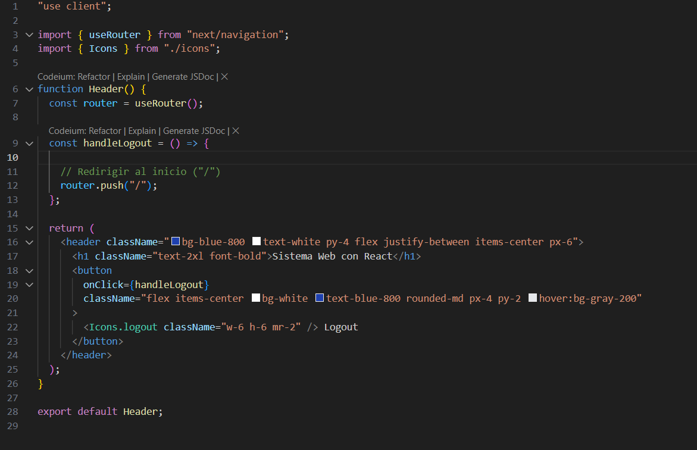
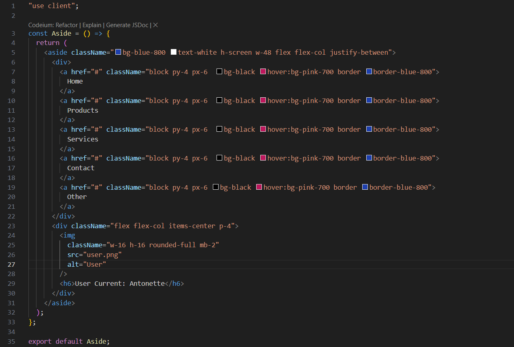
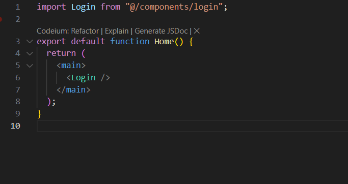
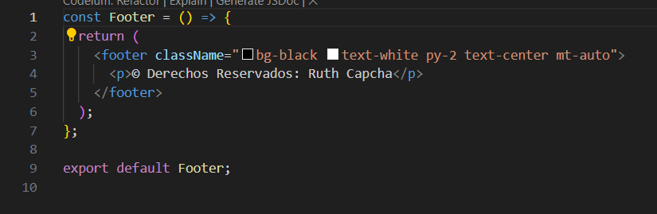

Descripción del Ejercicio
Este ejercicio consiste en desarrollar un panel de administración en Next.js que incluye un layout con `header`, `aside`, `main` y `footer`. Además, se implementa una funcionalidad CRUD (Crear, Leer, Actualizar y Eliminar) utilizando la API de JSONPlaceholder.
Procedimiento
-
1. Configuración del Proyecto
Inicializar un nuevo proyecto de Next.js y configurar los componentes necesarios completar el panel de administración.
 -
2. Implementación del CRUD
Desarrollar las funcionalidades para crear, leer, actualizar y eliminar posts utilizando la API de JSONPlaceholder.
Create
Update and Delete
 -
3. Funcionalidades Adicionales
Añadir las siguientes funcionalidades adicionales:
Ordenación por Campo de Datos
Búsqueda en el Campo Title

Paginación de 8 en 8
 -
4. Funcionalidades de Panel de Administración
Añadir las siguientes funcionalidades adicionales:
Creación de los componentes `header`
Creación de los componentes `aside`
Creación de los componentes `main`
Creación de los componentes `footer`
 -
5. Pruebas y Depuración
Realizar pruebas para asegurarse de que todas las operaciones CRUD y las funcionalidades adicionales funcionen correctamente, y depurar cualquier problema encontrado.
Resultados
El resultado final es una aplicación funcional que permite realizar operaciones CRUD sobre los posts utilizando la API de JSONPlaceholder. A continuación se muestran algunas capturas de pantalla de la aplicación: